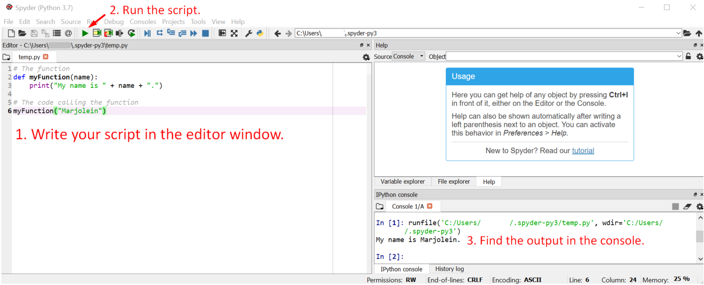

Neural Networks Using Python¶
Neural networks are systems that function in a similar manner as a human brain. Information is passed on through a network on neurons. This network connects the input and output layers. Intermediate hidden layers are activated based on an activation function. Furthermore, weights and biases exist between layers. The general structure of a neural network is depicted below.
 Source
We can build and train neural networks to predict an output value based on particular input values. For example, we can use a neural network to classify an object based on its characteristics.
In this tutorial, we will build and train a neural network using numpy. If you have not installed numpy, please do so. If you have an Anaconda distribution of Python, it will be installed already.
The sections below describe an example where we try to estimate the year of construction of houses based on several characteristics. To keep things simple, we will stick to a small, two-layer network with backpropagation. We will use the sigmoid activation function.
1. Preparing the Data¶
In this tutorial, we will work with numpy arrays. These objects concern grids of values (all of which are of the same datatype). These arrays have two important attributes:
Rank = The number of dimensions of the array. To illustrate, a
listof values has one dimension, whereas a table usually has two (rows and colomns). Note that more dimensions are possible in the case of anumpyarray.Shape = The size of the array along each dimension.
We will specify two arrays:
Input array: This array contains the input data. In our example, these concern characteristics of homes. We will call these variables x1-x4 and their values will be binary (0=false, 1=true). So for example, a variable could capture the presence of double glazing.
We create this input array using numpy.array() and providing a sequence of lists. Each list represents one row in the array.
import numpy as np
# Input Dataset
X = np.array([[1,0,1,0], [1,0,0,0], [1,0,0,0], [1,1,1,1], [1,1,0,1], [1,1,1,0]])
Output array: We will consider two output arrays in this tutorial.
In the main text, we will discuss a neural network that classifies a house as old (<1990) or new (1990>). In this case, the output is a binary value. If the home is old, the value will be 0. In the case of a new building, the value will be 1.
In the exercises, you will develop a neural network which estimates the construction year in absolute numbers.
The output dataset concerns only one variable. Hence, if we would represent the data in a table, there would be only one column. Since it is easier to specify a row, we will do this first and then transpose the row to a column. This is done using .T on the numpy array. (Try it yourself! Can you specify the output data without transposing?)
import numpy as np
# Input Dataset
X = np.array([[1,0,1,0], [1,0,0,0], [1,0,0,0], [1,1,1,1], [1,1,0,1], [1,1,1,0]])
# Output Dataset
y = np.array([[0,0,0,1,1,1]]).T
Exercise 1: Generating the Data¶
The exercises below help you understand how we generated the data.
Print the
InputandOutputarrays.Evaluate their structure. How many rows do they have? What are their dimensions?
How many input variables are there?
If we consider output=1 as a new building (and output=0 as old). What can you say about the six cases in the output dataset?
Can you already distinguish a pattern among the old vs. new buildings?
Which variable do you think beforehand will contribute the least to the prediction?
Now, you will need to create your own input and output data.
Think of three attributes that likely relate to the construction year of buildings. Make sure that these attributes can be captures by either a binary, integer or decimal value.
Are you able to store the data on each of the attributes as a single data-type (e.g. float or integer)?
Select a total of 10 building years between 1920 and 2020. Make sure the years are somewhat distributed over the defined period.
For each building year you selected, determine a value for the attributes you specified earlier. Try to come up with values that seem logical for the particular construction year. That is, the algorithm should be able to identify a pattern in the data.
Create an
InputandOutputarray to store the data you just produced.Print the arrays to check the structure and content.
2. The Activation Function¶
Assuming you have some theoretical knowledge on neural networks, you should be familiar with activation functions. These functions determine whether a neuron is the network is activated or not. In our example, we will apply the non-linear sigmoid function for this. We add this to our script using the code below.
# Sigmoid function.
def nonlin(x,deriv=False):
if(deriv==True):
return x*(1-x)
return 1/(1+np.exp(-x))
3. Initializing the Weights¶
Before we start training a model. We will initialize random weights. (Recent research has shown that non-random initial weights can actually improve predictions and efficiency, but we will not consider that here.) It is common to specify a random seed (np.random.seed()). This maintains the same set of random weights across different runs of the script, which can make it easier to compare results while developing the script. If you change the argument that is passed to this function, the initial weights will change.
Since we are only dealing with two layers (Input and Output), we only need one set of weights. Our example, these weights are stored in a four by one matrix. These dimensions are suitable because we are using four input variables to predict one output. Hence, we need to connect each of the four input variables to the single output variable, resulting in four weights.
import numpy as np
# Input Dataset
X = np.array([[1,0,1,0], [1,0,0,0], [1,0,0,0], [1,1,1,1], [1,1,0,1], [1,1,1,0]])
# Output Dataset
y = np.array([[0,0,0,1,1,1]]).T
# Specify random seed.
np.random.seed(1)
# Sigmoid function
def nonlin(x,deriv=False):
if(deriv==True):
return x*(1-x)
return 1/(1+np.exp(-x))
# initialize weights randomly with mean 0
syn0 = 2*np.random.random((3,1)) - 1
Exercise 2: Initializing the weights¶
Extent your own script for estimating the age of homes to include the random initial weights.
Try to draw the structure of your to-be-created neural network. (See the image at the start of this tutorial.)
What should the dimensions of the matrix with random weights be in the case of your script? Why?
Add the code for initializing random weights to your script. (Also, make sure you added the sigmoid function as instructed previously!)
4. Training the Network¶
We will train the network by iteratively determining the optimal weights. In this tutorial, we will not go into depth concerning theory. However, we will discuss the code for training a single-layered network using backpropagation step by step.
The network is trained using a for loop, which iterates a specified number of times. The more iterations, the longer it might take. However, the outcome can also become more accurate (although there is a case of diminishing returns). In our example, we will iterate 100 times.
We use the following abbreviations in our script:
l0 = the first layer, hence, the input
l1 = the second layer, hence, the predicted output
nonlin = the function we wrote that passes its input through the sigmoid function
syn0 = the weights
Please have a careful look at the comments in the code. They describe the steps which are taken to train the network. You can find more info on the theoretical background of these steps on this webpage if you are interested.
After 100 iterations, we print the values of our output layer to the console.
for iter in range(100):
# Use sigmoid function to estimate the output based on initial random weights.
l0 = Input
l1 = nonlin(np.dot(l0,syn0))
# Determine the difference between the output and the predicted output.
l1_error = Output - l1
# Multiply the error by the slope of the sigmoid function at the values in l1 (input layer).
l1_delta = l1_error * nonlin(l1,True)
# Update the weights accordingly to start our next iteration.
syn0 += np.dot(l0.T,l1_delta)
# Printing the output to the console.
print("OUTPUT:")
print(l1)
Exercise 3: Training Your Network¶
You will now train your own network, based on the input data that you generated.
Check the example code carefully. Will you have to change anything?
If so, implement the changes.
Add the code for training your neural network to your script.
What does the output look like? What do these values represent?
How does the output differ from the example?
We will evaluate the outputs more closely in the next exercise.
5. Evaluating the Output¶
Recall that in our example, we tried to classify homes as old or new buildings. Hence, the output variable concerned a binary value. However, as you will notice, our output values are not binary. Since we have a very small set of cases, deriving the predicted category manually is possible. (Close to 1 = new. Close to 0 = old.) However, this becomes inconvenient if you are dealing with large datasets, as is usually the case. It is therefore sometimes handy to transform the results to integer values.
Although, there is also value in the decimal numbers. That is, they capture the likelihood that the classification is right. A case with a predicted value of 0.6 is much less likely to be a new home than one with a predicted value of 0.9.
There are several ways to evaluate the performance of our classification network. For example, we can determine true/false positive and true/false negative rates and use these to…
develop a confusion matrix.
calculate metrics such as precision and accuracy.
Exercise 4: Evaluating the Output¶
First, consider the output of the example code.
Do you judge the predictions to be accurate? Why?
Rerun the script with 10 and 1000 iterations. To what extent do the conclusions differ?
What would you recommend as a suitable number of iterations? Why? (Hint: It is common in studies to plot the ‘loss’ against the number of iterations to optimize. You do not have to do so in the exercise, but it might be interesting during a project.)
Try to calculate the true/false positive and true/false negative rates using Python.
Try to develop a confusion matrix. (Hint: This tutorial discusses an example of a confusion matrix.)
Now, let us review the output of your own script.
Is your neural network suitable to predict the construction year of buildings? Why?
Assess if you might need to increase the number of iterations to improve the predictions. Or can you actually decrease it?
Try to use Python to calculate the average size of the error of your prediction.
Try adding more cases to your dataset which improves the performance of your network. Add as few new cases as possible to achieve the greatest improvement. Base your choices on the predicted values. (Hint: For which construction years are the predictions far off?)